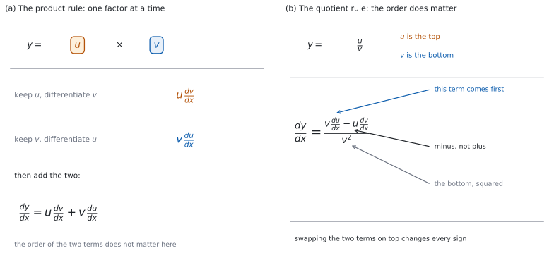

SL 5.6b — The product and quotient rules（積の微分法と商の微分法）
- 式が積か商かを見分けられる。
- product rule（積の微分法）を使って、積を微分できる。
- quotient rule（商の微分法）を使って、商を微分できる。
- 商の微分法で、分子の順番とマイナス、分母の \(2\) 乗を正しく書ける。
- \(u\) や \(v\) が合成関数のとき、連鎖律と組み合わせて使える。
- 先に整理すれば規則が要らない式を見分けられる。
- 答えを、値や形で確かめられる。
The idea
1. 積と商を見分ける
まず、式全体の形を見ます。
\(x\) を含むかたまりが \(2\) つあるときだけ、積や商の規則が要ります。 \(5\sin x\) は定数倍なので、積の微分法は要りません（SL 5.6a）。
2. 積の微分法
\(y = uv\) のとき
\[ \frac{dy}{dx} = u\frac{dv}{dx} + v\frac{du}{dx} \tag{1}\]
です。これを product rule（積の微分法）といいます（図 1 (a)）。
公式集の 5.6 の欄に、Product rule として 式 1 が印刷されています。\(y = uv\) という文字で書かれているので、どちらを \(u\) にしたかを、答案にも書いてください。
言葉にすると「片方ずつ微分して足す」です。 片方を残したままもう片方を微分し、それを入れかえてもう \(1\) つ作り、足します。
\(2\) 項できます。 \(1\) 項しか出てこなかったら、どこかで止まっています。
3. \(u\) と \(v\) の決め方
積では、どちらを \(u\) にしても同じ答えになります。 式 1 の \(2\) 項が入れかわるだけです。
ふつうは、左のかたまりを \(u\) にします。 決め方を \(1\) つに固定しておくと、書きまちがえが減ります。
| 式 | \(u\) | \(v\) |
|---|---|---|
| \(x^{2}\sin x\) | \(x^{2}\) | \(\sin x\) |
| \(x\ln x\) | \(x\) | \(\ln x\) |
| \((x+1)e^{x}\) | \(x+1\) | \(e^{x}\) |
商では、上を \(u\)、下を \(v\) と決まっています。 入れかえて公式集の式に入れると、出てくるのは \(\dfrac{v}{u}\) の導関数です。符号が変わるだけではなく、分母も別の式になります。 あとからマイナスを付けても、もとにはもどりません。
4. 商の微分法
\(y = \dfrac{u}{v}\)（\(v \ne 0\)）のとき
\[ \frac{dy}{dx} = \frac{v\dfrac{du}{dx} - u\dfrac{dv}{dx}}{v^{2}} \tag{2}\]
です。これを quotient rule（商の微分法）といいます（図 1 (b)）。
公式集の 5.6 の欄に、Quotient rule として 式 2 が印刷されています。\(y = \dfrac{u}{v}\) という文字で書かれています。\(v \ne 0\) になる範囲でだけ使えます。
分母は、もとの分母の \(2\) 乗です。 \(v'\) の \(2\) 乗ではありません。
\(v = 0\) になる \(x\) は、はじめから定義域の外です。 問題文に「for \(x \ne 2\)」のような但し書きが付くのは、そのためです。
5. 分子の順番
分子は、\(v\dfrac{du}{dx}\) が先です。 引く順番を逆にすると、答え全体の符号が変わります。
\[ \frac{u\dfrac{dv}{dx} - v\dfrac{du}{dx}}{v^{2}} = -\frac{dy}{dx} \tag{3}\]
式 3 の左辺が、書きまちがえたときの形です。 等式そのものは正しく、書きまちがえると符号が逆になることを表しています。公式集を見て、どちらが先かを毎回たしかめてください。
積のほうは、順番を気にしなくてかまいません。 足し算なので、入れかえても同じです。
6. 連鎖律と組み合わせる
\(u\) や \(v\) が合成関数なら、そこで連鎖律を使います（SL 5.6a）。
たとえば \(v = \cos(4x)\) なら
\[ \frac{dv}{dx} = -\sin(4x) \times 4 = -4\sin(4x) \]
規則は \(1\) つずつ使ってください。 まず積か商かを決め、\(\dfrac{du}{dx}\) と \(\dfrac{dv}{dx}\) を別に求めてから、式に入れます。
| 歩 | すること |
|---|---|
| \(1\) | 積か商かを決め、\(u\) と \(v\) を書く |
| \(2\) | \(\dfrac{du}{dx}\) を求める（必要なら連鎖律） |
| \(3\) | \(\dfrac{dv}{dx}\) を求める（必要なら連鎖律） |
| \(4\) | 公式集の形に入れて、整理する |
7. 先に整理できないか
規則を使う前に、式を見てください。 先に整理できれば、規則は要りません。
分母が \(1\) 項の分数は、項ごとに分けられます（SL 5.3）。\(\dfrac{x^{5}+1}{x^{3}} = x^{2} + x^{-3}\) と直せば、あとは項ごとの微分です。
かっこの積は、展開できることがあります。 \(x^{2}(x+1)\) は \(x^{3}+x^{2}\) と同じです。ただし、\(\sin\) や \(e^{x}\) を含む積は展開できません。
約分するときは、定義域に気をつけてください。 約分しても、もとの式で分母が \(0\) になる \(x\) は、定義域の外のままです。
どちらでやっても、同じ答えになります。 整理してから微分しても、規則を使っても、もとの式が定義される範囲では結果は変わりません。
これらの微分は、電卓なしで出します。このページの例題と演習は、すべて手で解ける形です。
角はすべてラジアンです（SL 5.6a）。
グラフ画面に \(y = f(x)\) をかき、求めた \(f'(a)\) の符号が、そこで上がっているか下がっているかと合っているかを見ます。
電卓の角の設定をラジアンにしてください。

Why it works
なぜ、それぞれを微分してかけてはいけないのでしょうか。 \(1\) つ試すと合わないからです。
\(y = x \times x = x^{2}\) です。導関数は \(2x\) ですが、それぞれを微分してかけると \(1 \times 1 = 1\) です。\(2x\) とはちがいます。
なぜ、\(2\) 項になるのでしょうか。 \(u\) と \(v\) の両方が変わるからです。
\(x\) が少し増えて、\(u\) が \(\Delta u\)、\(v\) が \(\Delta v\) 変わったとします。積の変わり方は
\[ (u + \Delta u)(v + \Delta v) - uv = u\,\Delta v + v\,\Delta u + \Delta u\,\Delta v \]
です。両辺を \(\Delta x\) で割ると
\[ \frac{(u + \Delta u)(v + \Delta v) - uv}{\Delta x} = u\frac{\Delta v}{\Delta x} + v\frac{\Delta u}{\Delta x} + \Delta u \times \frac{\Delta v}{\Delta x} \]
です。\(\Delta x\) を \(0\) に近づけると、はじめの \(2\) 項が 式 1 の \(2\) 項に向かいます。 最後の項は \(\Delta u \times \dfrac{\Delta v}{\Delta x}\) の形で、\(\dfrac{\Delta v}{\Delta x}\) が \(\dfrac{dv}{dx}\) に向かうあいだに \(\Delta u\) が \(0\) に近づくので、消えます。
これは筋道の説明で、証明ではありません。 きちんとした証明は AHL の内容です。
なぜ、商の微分法はあの形なのでしょうか。 積の微分法と連鎖律から出てくるからです。
\(\dfrac{u}{v} = u \times v^{-1}\) と見ます。積の微分法を使い、\(v^{-1}\) の微分には連鎖律を使うと
\[ \frac{dy}{dx} = \frac{du}{dx} \times v^{-1} + u \times \left(-v^{-2}\frac{dv}{dx}\right) \]
です。\(v^{-1} = \dfrac{v}{v^{2}}\)、\(v^{-2} = \dfrac{1}{v^{2}}\) と書きなおして通分すると
\[ \frac{dy}{dx} = \frac{v\dfrac{du}{dx} - u\dfrac{dv}{dx}}{v^{2}} \]
になり、式 2 と同じです。マイナスは、\(v^{-1}\) を微分したときの \(-1\) から来ています。
なぜ、マイナスが自然なのでしょうか。 分母が大きくなると、分数全体は小さくなるからです。
\(u\) を止めておいて \(v\) だけ増やすと、\(\dfrac{u}{v}\) は（\(u > 0\)、\(v > 0\) なら）減ります。\(\dfrac{dv}{dx}\) の項にマイナスが付いているのは、この向きに合っています。
Worked examples
問題文は英語です。意味が理解できなかったら、問題文の下の「日本語訳」を開いてください。解説は日本語です。
この項目は Paper 1 に出ます。 電卓なしで解ける形にしてあります。
例題 1 The curve \(C\) has equation \(y = x^{3}e^{x}\). Find \(\dfrac{dy}{dx}\).
日本語訳
曲線 \(C\) は \(y = x^{3}e^{x}\) という方程式をもちます。\(\dfrac{dy}{dx}\) を求めなさい。
\(1\) 歩目。 \(x\) を含むかたまりが \(2\) つのかけ算なので、積の微分法です（第 1 節）。
\[ u = x^{3}, \qquad v = e^{x} \]
\(2\) 歩目と \(3\) 歩目。 それぞれを微分します。
\[ \frac{du}{dx} = 3x^{2}, \qquad \frac{dv}{dx} = e^{x} \]
\(4\) 歩目。 式 1 に入れます。
\[ \frac{dy}{dx} = x^{3}e^{x} + e^{x} \times 3x^{2} = x^{3}e^{x} + 3x^{2}e^{x} \]
\(x^{2}e^{x}\) でくくると、次の形にも書けます。
\[ \frac{dy}{dx} = x^{2}e^{x}(x + 3) \]
検算（項の数）。 \(2\) 項できています ✓ \(1\) 項なら、どこかで止まっています。
検算（\(e^{x}\)）。 どちらの項にも \(e^{x}\) が残っています ✓ \(e^{x}\) は微分しても消えません。
検算（\(x = 0\) で）。 \(\dfrac{dy}{dx} = 0\) です ✓ \(y = x^{3}e^{x}\) は \(x = 0\) の近くで \(x^{3}\) とほぼ同じ形なので、そこでの傾きは \(0\) です。
検算（\(x = -3\) で）。 くくった形から \(\dfrac{dy}{dx} = 0\) です ✓ \(x^{2}e^{x}\) は \(x = -3\) で \(0\) にならないので、\(x + 3\) のほうが \(0\) になっています。
\[u = x^{3}, \qquad v = e^{x}\] \[\frac{du}{dx} = 3x^{2}, \qquad \frac{dv}{dx} = e^{x}\] \[\frac{dy}{dx} = x^{3}e^{x} + 3x^{2}e^{x} = x^{2}e^{x}(x + 3)\]
例題 2 The curve \(C\) has equation \(y = \dfrac{\cos x}{x}\), for \(x \ne 0\), where \(x\) is in radians. Find \(\dfrac{dy}{dx}\).
日本語訳
曲線 \(C\) は \(y = \dfrac{\cos x}{x}\)（\(x \ne 0\)、\(x\) はラジアン）という方程式をもちます。\(\dfrac{dy}{dx}\) を求めなさい。
\(1\) 歩目。 わり算なので、商の微分法です。上を \(u\)、下を \(v\) とします（第 3 節）。
\[ u = \cos x, \qquad v = x \]
\(2\) 歩目と \(3\) 歩目。
\[ \frac{du}{dx} = -\sin x, \qquad \frac{dv}{dx} = 1 \]
\(4\) 歩目。 式 2 に入れます。分子は \(v\dfrac{du}{dx}\) が先です（第 5 節）。
\[ \frac{dy}{dx} = \frac{x \times (-\sin x) - \cos x \times 1}{x^{2}} \]
整理します。
\[ \frac{dy}{dx} = \frac{-x\sin x - \cos x}{x^{2}} \]
検算（分母）。 もとの分母の \(2\) 乗になっています ✓ \(\dfrac{dv}{dx} = 1\) の \(2\) 乗ではありません。
検算（\(\cos\) のマイナス）。 \(\dfrac{du}{dx} = -\sin x\) です ✓ ここでマイナスを落とすと、分子の \(2\) 項とも符号がちがってきます。
検算（順番）。 分子は \(x \times \dfrac{du}{dx}\) が先です ✓ \(\cos x \times 1\) を先に書くと、答え全体の符号が変わります。
検算（\(x = \pi\) で）。 分子は \(-\pi\sin\pi - \cos\pi = 1\) なので、\(\dfrac{dy}{dx} = \dfrac{1}{\pi^{2}} > 0\) です ✓ \(x\) が \(\pi\) より少し大きいところでは \(\cos x > -1\)、\(x > \pi\) なので \(\dfrac{\cos x}{x} > -\dfrac{1}{x} > -\dfrac{1}{\pi}\) となり、\(y\) は \(x = \pi\) のときより大きくなっています。
\[u = \cos x, \qquad v = x\] \[\frac{du}{dx} = -\sin x, \qquad \frac{dv}{dx} = 1\] \[\frac{dy}{dx} = \frac{x \times (-\sin x) - \cos x}{x^{2}} = \frac{-x\sin x - \cos x}{x^{2}}\]
例題 3 The function \(f\) is given by \(f(x) = x^{2}e^{3x}\). Find \(f'(x)\), giving your answer in a factorised form.
日本語訳
関数 \(f\) は \(f(x) = x^{2}e^{3x}\) で与えられます。\(f'(x)\) を、因数分解した形で求めなさい。
\(1\) 歩目。 かけ算なので積の微分法です。
\[ u = x^{2}, \qquad v = e^{3x} \]
\(2\) 歩目と \(3\) 歩目。 \(v\) は合成関数なので、ここで連鎖律を使います（第 6 節）。
\[ \frac{du}{dx} = 2x, \qquad \frac{dv}{dx} = e^{3x} \times 3 = 3e^{3x} \]
\(4\) 歩目。
\[ f'(x) = x^{2} \times 3e^{3x} + e^{3x} \times 2x = 3x^{2}e^{3x} + 2xe^{3x} \]
\(xe^{3x}\) でくくります。
\[ f'(x) = xe^{3x}(3x + 2) \]
検算（内側の \(3\)）。 \(3e^{3x}\) に \(3\) があります ✓ ないと、連鎖律を忘れています。
検算（\(e\) の肩）。 どの項も \(e^{3x}\) のままです ✓ 肩の \(3x\) はさわりません。
検算（\(x = 0\) で）。 \(f'(0) = 0\) です ✓ \(x = 0\) の近くで \(f\) は \(x^{2}\) とほぼ同じ形なので、傾きは \(0\) です。
検算（くくり方）。 \(xe^{3x}(3x+2)\) を展開すると \(3x^{2}e^{3x} + 2xe^{3x}\) ✓ これはくくり方の検算で、導関数そのものの検算ではありません。
\[u = x^{2}, \qquad v = e^{3x}\] \[\frac{du}{dx} = 2x, \qquad \frac{dv}{dx} = 3e^{3x}\] \[f'(x) = 3x^{2}e^{3x} + 2xe^{3x} = xe^{3x}(3x + 2)\]
例題 4 The function \(f\) is given by \(f(x) = \dfrac{x^{3} + 2x}{x}\), for \(x \ne 0\).
(a) Find \(f'(x)\) by first simplifying \(f(x)\).
(b) Explain why the quotient rule is not needed here.
日本語訳
関数 \(f\) は \(f(x) = \dfrac{x^{3} + 2x}{x}\)（\(x \ne 0\)）で与えられます。
(a) \(f(x)\) をまず簡単にしてから、\(f'(x)\) を求めなさい。
(b) ここで商の微分法が要らない理由を説明しなさい。
(a) 分母が \(1\) 項なので、項ごとに分けられます（第 7 節）。
\[ f(x) = \frac{x^{3}}{x} + \frac{2x}{x} = x^{2} + 2 \]
\[ f'(x) = 2x \]
(b) Explain なので、英語で理由を書きます。
試験ではこう書く
The denominator is a single term, so each term of the numerator can be divided by it. This turns \(f\) into \(x^{2} + 2\), which is a sum of powers of \(x\), and a sum is differentiated term by term. The quotient rule would give the same answer, but it is longer.
（分母が \(1\) 項なので、分子の各項をそれで割れる。そうすると \(f\) は \(x^{2}+2\) になり、これは \(x\) のべきの和なので、項ごとに微分できる。商の微分法でも同じ答えになるが、計算が長くなる、という意味です。）
検算（\(x = 1\) で）。 もとの式は \(\dfrac{1 + 2}{1} = 3\)、直した式は \(1 + 2 = 3\) ✓
検算（定義域）。 \(x^{2} + 2\) は \(x = 0\) でも計算できますが、もとの \(f\) は \(x = 0\) で定義されません ✓ 但し書きの \(x \ne 0\) は残ります。
検算（商の微分法でも）。 \(u = x^{3}+2x\)、\(v = x\) で計算すると、分子は \(x(3x^{2}+2) - (x^{3}+2x) = 2x^{3}\)、分母は \(x^{2}\) なので \(2x\) ✓ 同じ答えです。
検算（定数の項）。 \(+2\) は定数なので微分すると \(0\) です ✓ 答えに残りません。
(a) \[f(x) = x^{2} + 2\] \[f'(x) = 2x\]
(b) the denominator is a single term, so \(f(x)\) simplifies to \(x^{2} + 2\), which can be differentiated term by term
Common errors
\(\dfrac{d}{dx}(uv)\) は \(\dfrac{du}{dx} \times \dfrac{dv}{dx}\) ではありません（Why it works）。\(2\) 項できます。
\(v\dfrac{du}{dx}\) が先です（第 5 節）。逆にすると、答え全体の符号が変わります。
分母は \(v^{2}\) です（第 4 節）。\(v\) のままにしないでください。
\(u\) や \(v\) が合成関数なら、そこでも連鎖律が要ります（第 6 節）。
商では、上が \(u\)、下が \(v\) です（第 3 節）。入れかえると、分母までちがう式になります。積では入れかえても同じです。
答えは同じですが、計算が長くなり、途中で符号や \(2\) 乗を落としやすくなります。分母が \(1\) 項の分数や、展開できるかっこの積は、先に直してください（第 7 節）。
Exercises
各問題に、折りたたみが \(3\) つ付いています。日本語訳、解答例（答案用紙に書くべきこと。英語です。英語の答案例が付くものもあります）、解説（なぜそうなるか。日本語です）。
まず自分で解いて、次に解答例と見くらべてください。解説は、合わなかったときだけ開けば十分です。
1 The curve \(C\) has equation \(y = x^{3}\cos x\), where \(x\) is in radians. Find \(\dfrac{dy}{dx}\).
日本語訳
曲線 \(C\) は \(y = x^{3}\cos x\)（\(x\) はラジアン）という方程式をもちます。\(\dfrac{dy}{dx}\) を求めなさい。
\[u = x^{3}, \qquad v = \cos x\]
\[\frac{du}{dx} = 3x^{2}, \qquad \frac{dv}{dx} = -\sin x\]
\[\frac{dy}{dx} = -x^{3}\sin x + 3x^{2}\cos x\]
2 For each of the following, state which rule is needed, if any, and find the derivative.
(a) \(y = 5\cos x\), where \(x\) is in radians
(b) \(y = x\sin x\), where \(x\) is in radians
(c) \(y = \dfrac{x^{4} + x}{x^{2}}\), for \(x \ne 0\)
日本語訳
次のそれぞれについて、必要な規則があればそれを述べ、導関数を求めなさい。
(a) \(y = 5\cos x\)（\(x\) はラジアン）
(b) \(y = x\sin x\)（\(x\) はラジアン）
(c) \(y = \dfrac{x^{4} + x}{x^{2}}\)（\(x \ne 0\)）
(a) a constant multiple, so no product rule is needed
\[\frac{dy}{dx} = -5\sin x\]
(b) the product rule
\[u = x, \qquad v = \sin x\]
\[\frac{du}{dx} = 1, \qquad \frac{dv}{dx} = \cos x\]
\[\frac{dy}{dx} = x\cos x + \sin x\]
(c) no rule is needed: divide first
\[y = x^{2} + x^{-1}, \qquad \frac{dy}{dx} = 2x - x^{-2}\]
まず 第 1 節 の表で、式全体の形を見分けます。
(a) \(5\) は定数なので、\(x\) を含むかたまりは \(1\) つだけです。定数倍はそのまま残ります（SL 5.6a）。
(b) \(x\) と \(\sin x\) の \(2\) つがかかっているので、積の微分法です。
(c) 分母が \(1\) 項なので、項ごとに分けられます（第 7 節）。
検算（(a) の符号）。 \(\cos\) の導関数にはマイナスが付きます ✓
検算（(b) の項の数）。 \(2\) 項できています ✓ \(1 \times \cos x\) とだけ書くと、積の微分法を使っていません。
検算（(c) の書きかえ）。 \(x = 1\) のとき、もとの式は \(\dfrac{1 + 1}{1} = 2\)、直した式は \(1 + 1 = 2\) ✓
3 The function \(f\) is given by \(f(x) = x^{2}\ln x\), for \(x > 0\). Find \(f'(x)\).
日本語訳
関数 \(f\) は \(f(x) = x^{2}\ln x\)（\(x > 0\)）で与えられます。\(f'(x)\) を求めなさい。
\[u = x^{2}, \qquad v = \ln x\]
\[\frac{du}{dx} = 2x, \qquad \frac{dv}{dx} = \frac{1}{x}\]
\[f'(x) = x^{2} \times \frac{1}{x} + 2x\ln x = x + 2x\ln x\]
積の微分法です。\(x^{2} \times \dfrac{1}{x}\) が \(x\) に約分されます（第 2 節）。
検算（約分）。 \(\dfrac{x^{2}}{x} = x\) ✓ \(x^{2}\) のまま残していません。
検算（\(x = 1\) で）。 \(\ln 1 = 0\) なので \(f'(1) = 1\) です ✓
検算（定義域）。 \(\ln x\) は \(x > 0\) でしか定義されません ✓ 但し書きが付いているのは、そのためです。
4 The curve \(C\) has equation \(y = \dfrac{x + 1}{x - 2}\), for \(x \ne 2\). Find \(\dfrac{dy}{dx}\).
日本語訳
曲線 \(C\) は \(y = \dfrac{x + 1}{x - 2}\)（\(x \ne 2\)）という方程式をもちます。\(\dfrac{dy}{dx}\) を求めなさい。
\[u = x + 1, \qquad v = x - 2\]
\[\frac{du}{dx} = 1, \qquad \frac{dv}{dx} = 1\]
\[\frac{dy}{dx} = \frac{(x - 2) - (x + 1)}{(x - 2)^{2}} = \frac{-3}{(x - 2)^{2}}\]
商の微分法です（第 4 節）。\(\dfrac{du}{dx} = \dfrac{dv}{dx} = 1\) なので、分子は引き算だけになります。
検算（分子）。 \((x - 2) - (x + 1) = -3\) ✓ \(x\) が消えます。
検算（符号）。 \((x-2)^{2} > 0\) なので、\(\dfrac{dy}{dx} < 0\) です ✓ \(x = 3\) で \(y = 4\)、\(x = 4\) で \(y = \dfrac{5}{2}\) と減っています。
検算（定義域）。 \(x = 2\) では分母が \(0\) になります ✓ 但し書きの \(x \ne 2\) は、導関数でも要ります。
5 The curve \(C\) has equation \(y = \dfrac{x^{2}}{e^{x}}\). Find \(\dfrac{dy}{dx}\).
日本語訳
曲線 \(C\) は \(y = \dfrac{x^{2}}{e^{x}}\) という方程式をもちます。\(\dfrac{dy}{dx}\) を求めなさい。
\[u = x^{2}, \qquad v = e^{x}\]
\[\frac{du}{dx} = 2x, \qquad \frac{dv}{dx} = e^{x}\]
\[\frac{dy}{dx} = \frac{e^{x} \times 2x - x^{2}e^{x}}{\left(e^{x}\right)^{2}} = \frac{2x - x^{2}}{e^{x}}\]
商の微分法です。上が \(x^{2}\)、下が \(e^{x}\) です（第 3 節）。分子と分母で \(e^{x}\) が \(1\) つずつ約分できます。
検算（約分）。 \(\left(e^{x}\right)^{2} = e^{2x}\) なので、\(\dfrac{e^{x}}{e^{2x}} = \dfrac{1}{e^{x}}\) ✓
検算（\(x = 0\) で）。 \(\dfrac{dy}{dx} = 0\) です ✓ \(x = 0\) の近くでは \(e^{x}\) がほぼ \(1\) なので、\(y\) は \(x^{2}\) とほぼ同じ形になり、傾きは \(0\) です。
検算（\(x = 2\) で）。 分子は \(4 - 4 = 0\) です ✓ \(y\) の値をくらべると、\(e < 4\) なので \(\dfrac{4}{e^{2}} > \dfrac{1}{e}\)、\(4e > 9\) なので \(\dfrac{4}{e^{2}} > \dfrac{9}{e^{3}}\) です。\(x = 2\) の値が、\(x = 1\) と \(x = 3\) の値より大きくなっています。
6 The curve \(C\) has equation \(y = \dfrac{e^{2x}}{x + 1}\), for \(x \ne -1\). Find \(\dfrac{dy}{dx}\), giving your answer in a factorised form.
日本語訳
曲線 \(C\) は \(y = \dfrac{e^{2x}}{x + 1}\)（\(x \ne -1\)）という方程式をもちます。\(\dfrac{dy}{dx}\) を、因数分解した形で求めなさい。
\[u = e^{2x}, \qquad v = x + 1\]
\[\frac{du}{dx} = 2e^{2x}, \qquad \frac{dv}{dx} = 1\]
\[\frac{dy}{dx} = \frac{(x + 1) \times 2e^{2x} - e^{2x}}{(x + 1)^{2}} = \frac{e^{2x}(2x + 1)}{(x + 1)^{2}}\]
商の微分法を使い、\(u\) の微分で連鎖律を使います（第 6 節）。
検算（内側の \(2\)）。 \(2e^{2x}\) に \(2\) があります ✓ ないと、連鎖律を忘れています。
検算（分母）。 \((x + 1)^{2}\) です ✓ \(x + 1\) のままにしていません。
検算（\(x = -\dfrac{1}{2}\) で）。 分子が \(0\) になります ✓ \(e^{2x}\) はどの \(x\) でも \(0\) にならないので、\(2x + 1\) のほうが \(0\) です。
7 The curve \(C\) has equation \(y = x\sin(2x)\), where \(x\) is in radians. Find \(\dfrac{dy}{dx}\).
日本語訳
曲線 \(C\) は \(y = x\sin(2x)\)（\(x\) はラジアン）という方程式をもちます。\(\dfrac{dy}{dx}\) を求めなさい。
\[u = x, \qquad v = \sin(2x)\]
\[\frac{du}{dx} = 1, \qquad \frac{dv}{dx} = 2\cos(2x)\]
\[\frac{dy}{dx} = 2x\cos(2x) + \sin(2x)\]
積の微分法を使い、\(v\) の微分で連鎖律を使います（第 6 節）。
検算（内側の \(2\)）。 \(2\cos(2x)\) に \(2\) があります ✓ ないと、連鎖律を忘れています。
検算（項の数）。 \(2\) 項できています ✓
検算（\(x = 0\) で）。 \(\dfrac{dy}{dx} = 0\) です ✓ \(x = 0\) の近くで \(\sin(2x)\) は \(2x\) にとても近いので、\(y\) は \(2x^{2}\) とほぼ同じ形です。
8 A student writes \(\dfrac{d}{dx}\left(\dfrac{x^{2}}{x + 3}\right) = \dfrac{x^{2} - (x + 3) \times 2x}{(x + 3)^{2}}\), for \(x \ne -3\). Identify the error and write down the correct derivative.
日本語訳
ある生徒が \(\dfrac{d}{dx}\left(\dfrac{x^{2}}{x + 3}\right) = \dfrac{x^{2} - (x + 3) \times 2x}{(x + 3)^{2}}\)（\(x \ne -3\)）と書きました。まちがいを指摘し、正しい導関数を書きなさい。
the two terms in the numerator are the wrong way round: the term containing \(\dfrac{du}{dx}\) must come first
\[\frac{d}{dx}\left(\frac{x^{2}}{x + 3}\right) = \frac{(x + 3) \times 2x - x^{2}}{(x + 3)^{2}} = \frac{x^{2} + 6x}{(x + 3)^{2}}\]
分子の引く順番が逆です（第 5 節）。分母は合っています。
検算（符号）。 生徒の答えは、正しい答えの \(-1\) 倍になっています ✓ 分子の \(2\) 項を入れかえただけだからです。
検算（\(x = 1\) で）。 正しい答えは \(\dfrac{1 + 6}{16} = \dfrac{7}{16} > 0\)、生徒の答えは \(-\dfrac{7}{16} < 0\) です。\(y\) の値は \(x = 1\) で \(\dfrac{1}{4}\)、\(x = 2\) で \(\dfrac{4}{5}\) と増えているので、正しいのは正のほうです ✓
検算（分子の展開）。 \(2x^{2} + 6x - x^{2} = x^{2} + 6x\) ✓
試験ではこう書く
The two terms in the numerator have been subtracted the wrong way round. The quotient rule requires the term containing the derivative of the top to come first. With \(u = x^{2}\) and \(v = x + 3\) the correct derivative is \(\dfrac{(x + 3)(2x) - x^{2}}{(x + 3)^{2}}\), which simplifies to \(\dfrac{x^{2} + 6x}{(x + 3)^{2}}\). The student’s answer is \(-1\) times this.
9 The function \(f\) is given by \(f(x) = (2x + 1)(x - 4)\). Find \(f'(x)\). Describe an alternative method for finding \(f'(x)\), which does not use the product rule.
日本語訳
関数 \(f\) は \(f(x) = (2x + 1)(x - 4)\) で与えられます。\(f'(x)\) を求めなさい。また、積の微分法を使わずに \(f'(x)\) を求める別の方法を述べなさい。
\[f'(x) = 4x - 7\]
expand the brackets first: \(f(x) = 2x^{2} - 7x - 4\), then differentiate term by term
かっこの積は展開できます（第 7 節）。
検算（展開）。 \(2x^{2} - 8x + x - 4 = 2x^{2} - 7x - 4\) ✓
検算（積の微分法でも）。 \(2(x - 4) + (2x + 1) = 2x - 8 + 2x + 1 = 4x - 7\) ✓ 同じ答えです。
検算（\(x = 0\) で）。 \(f'(0) = -7\) です ✓ 展開した式の \(x\) の係数と合っています。
試験ではこう書く
Expand the brackets first. This gives \(f(x) = 2x^{2} - 7x - 4\), which is a sum of powers of \(x\). Differentiating term by term gives \(f'(x) = 4x - 7\). Expanding is possible here because both factors are polynomials; it would not be possible if one factor were, for example, \(\sin x\).
10 The function \(f\) is given by \(f(x) = \dfrac{\sin x}{x^{2} + 1}\), where \(x\) is in radians. Find \(f'(x)\) and show that \(f'(0) = 1\). Explain why \(f'(x)\) is defined for every real value of \(x\).
日本語訳
関数 \(f\) は \(f(x) = \dfrac{\sin x}{x^{2} + 1}\)（\(x\) はラジアン）で与えられます。\(f'(x)\) を求め、\(f'(0) = 1\) となることを示しなさい。また、\(f'(x)\) がすべての実数 \(x\) で定義される理由を説明しなさい。
\[u = \sin x, \qquad v = x^{2} + 1\]
\[\frac{du}{dx} = \cos x, \qquad \frac{dv}{dx} = 2x\]
\[f'(x) = \frac{(x^{2} + 1)\cos x - 2x\sin x}{(x^{2} + 1)^{2}}\]
\[f'(0) = \frac{1 \times 1 - 0}{1} = 1\]
for every real \(x\) we have \(x^{2} + 1 \geq 1\), so the denominator \((x^{2} + 1)^{2}\) is never zero
商の微分法です（第 4 節）。分子の順番に気をつけます。
検算（順番）。 \((x^{2}+1)\cos x\) が先です ✓
検算（\(\sin 0\) と \(\cos 0\)）。 \(\sin 0 = 0\)、\(\cos 0 = 1\) ✓ \(2\) 項目が消えます。
検算（分母）。 \(x^{2} + 1\) はどの \(x\) でも \(0\) になりません ✓ 但し書きが要りません。
試験ではこう書く
The denominator of \(f'(x)\) is \((x^{2} + 1)^{2}\). For every real \(x\) we have \(x^{2} \geq 0\), so \(x^{2} + 1 \geq 1\) and the denominator is at least \(1\). It is therefore never zero, so no value of \(x\) has to be excluded and \(f'(x)\) is defined for every real \(x\).